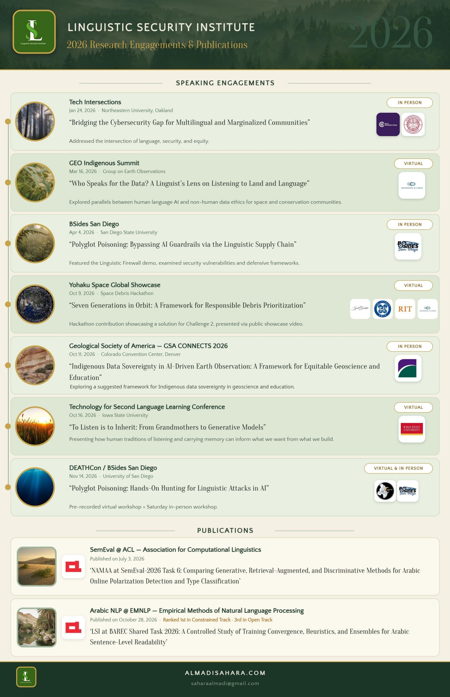

01
Data sovereignty
Who controls the language data, and who benefits from its use?
Communities consent to how their languages are represented, and share in the value their languages create.
Your choices are remembered on this device.
Linguistic Security Institute · open-source research
The Linguistic Security Institute asks what AI systems owe the communities whose languages they process. We build frameworks, tools and conversations for a world where technology serves language, not the other way around.
The framework
Linguistic security is the principle that AI systems must be accountable to the communities whose languages they process.
It asks not only whether a system works, but who it works for, who it fails, and who decides.
Three pillars
Who controls the language data, and who benefits from its use?
Communities consent to how their languages are represented, and share in the value their languages create.
Which languages are represented, which are missing, and how does the system perform on each?
Per-language reporting and open reasoning, because aggregate metrics hide uneven consequences.
Does the system serve the community, or extract from it?
Accuracy alone is not enough if the output causes harm or reinforces historical inequities.
Language carries culture, trust, and meaning across generations. It also carries risk. Linguistic security is the discipline of honoring the first while accounting for the second.
Read it your way
Linguistic security is the study of how language becomes an attack surface in AI systems, and what it takes to defend it. Non-English, dialectal and code-switched inputs slip past safety guardrails far more often than English. These are not edge cases. They are structural vulnerabilities, and LSI measures them, publishes tools to test for them, and trains teams to close them.
Try the Linguistic FirewallFor learners and educators, linguistic security means AI systems must serve the communities whose languages they process, not extract from them. AI tutors, translation tools and automated assessment are entering classrooms, yet they often fail on dialects and marginalized languages, flattening the diversity that makes language learning rich. Linguistic security asks what these systems owe learners, and brings educators in as partners.
Invite a workshop for educatorsAs AI mediates access to healthcare, benefits, education and civic life, failures on dialectal and marginalized languages become civil-rights failures. LSI’s governance framework rests on data sovereignty, transparency and social value, and is anchored in existing instruments including the CARE Principles, the EU AI Act, GDPR and the Nagoya Protocol. It asks who controls the data, who benefits, and who is accountable when interpretation fails.
Discuss a policy briefingHow we work
Evaluating LLMs for dialectal degradation, tokenization disparities and semantic failure modes across low- and high-resource languages.
Python toolkits, security frameworks and datasets that help developers defend against polyglot poisoning and cross-lingual prompt injection.
Standards for linguistic safety in institutional AI pipelines, plus hands-on workshops for students, developers and researchers.
Active initiatives
Python toolkit for detecting multilingual prompt injection, code-switching guardrail bypasses and polyglot poisoning. Presented at BSides San Diego 2026.
Interactive decision tool for responsible space-debris prioritization, built for the YOHAKU hackathon’s Challenge 2.
Retrieval-augmented text-to-speech prototype supporting Nahuatl-aware Spanish pronunciation, for Indigenous language preservation.
Early-stage command-line tool that flags hard-coded English and missing multilingual or dialect support in software projects.
Demos
Working prototypes from the Linguistic Security Institute, open on GitHub.
A prototype that probes LLM guardrails for "polyglot poisoning": using dialects, scripts and code-switching to slip past safety filters tuned mostly for English.
Responsible disclosure: full attack prompts are shared only with verified researchers working on defenses.
A decision tool for choosing which space-debris objects to take responsibility for first, built on seven questions grounded in the Lakota principles shared through the challenge.
2026 at a glance

Print-ready PDF · US Letter · all engagements, publications & open-source projects.
Download ↓Print-ready PDF · US Letter landscape · ideal for wide-format screens and displays.
Download ↓Full 11-slide speaker kit with bio, framework overview, engagements and inquiry info.
View →Discuss partnerships, workshops, speaking invitations or research collaborations.
Fill out form →Prefer email? Reach us at linguisticsecurityinstitute@gmail.com for any inquiry.
Email →Upcoming workshop
Built on the April 2026 BSides demo: an intensive hands-on session in polyglot red-teaming and defense frameworks. DEATHCon · November 14, 2026.
DEATHCon workshops →Community
LSI is open to linguists, security researchers, developers, educators and community language keepers. Every dialect you bring makes the work stronger.
Open issues and pull requests on LSI repositories.
Help test tools in your language or dialect.
Interviews, demos and workshops from LSI — making AI security accessible and visual for the whole community.
Multilingual datasets and evaluation benchmarks — free to use, fork and build on.
For conferences, classrooms and organizations.
Updates on LinkedIn and the blog.